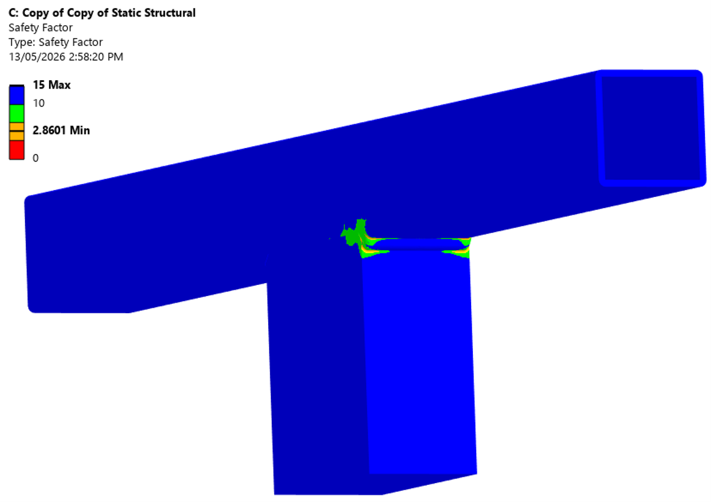
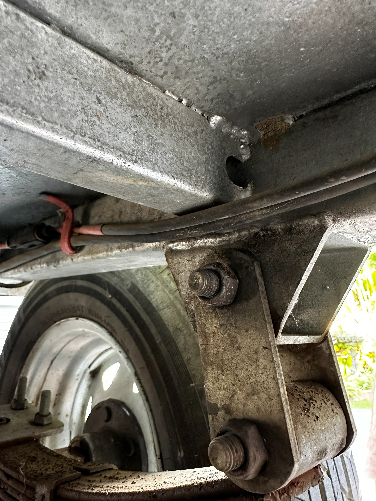
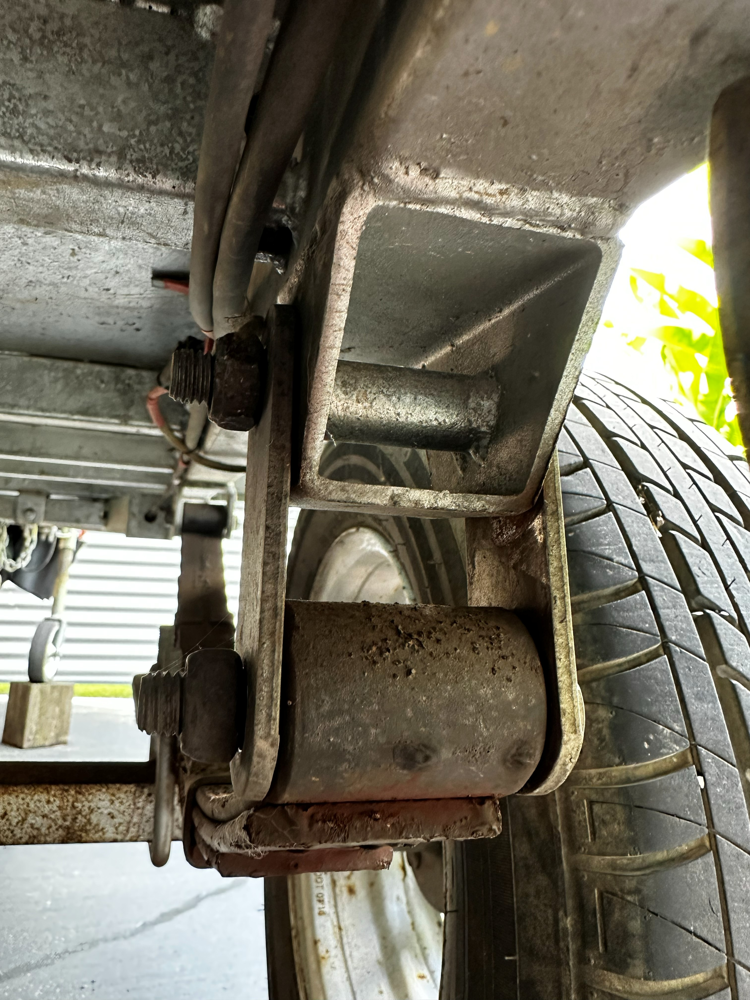
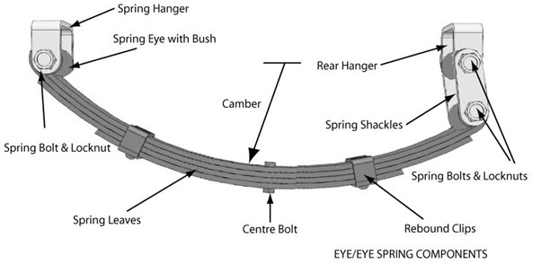
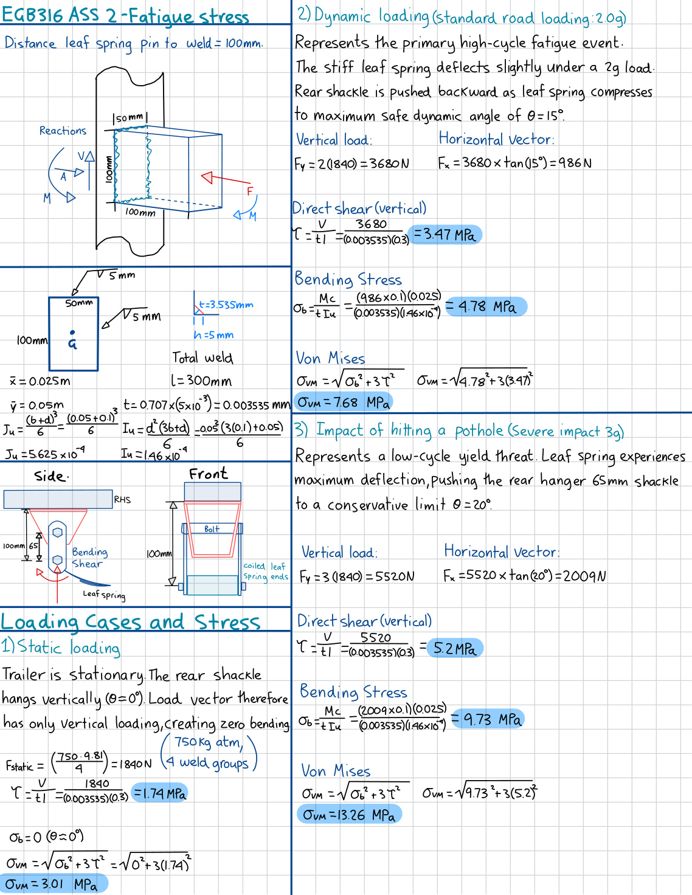
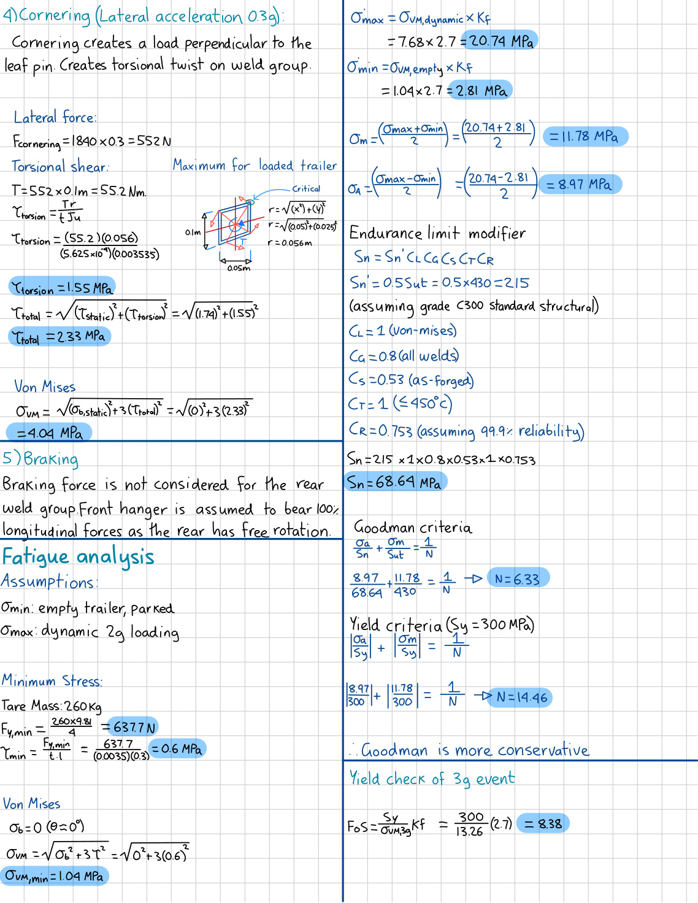
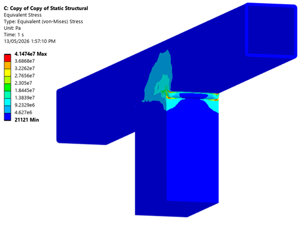
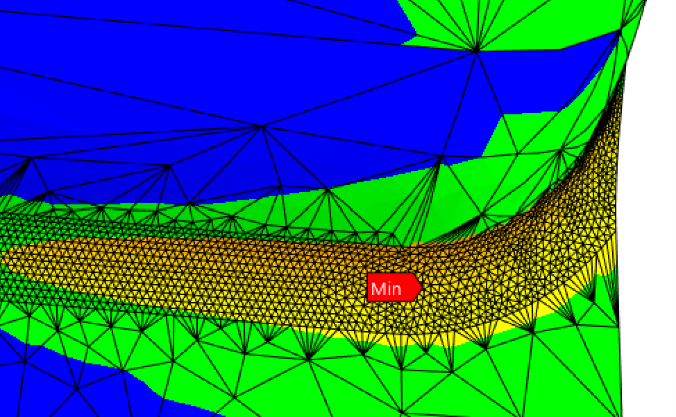

A complete fatigue design audit of the fillet-welded leaf spring rear hanger bracket on a 750 kg ATM single-axle box trailer. The analysis proceeds through functional load path identification, weld group stress calculation across five loading conditions, Modified Goodman infinite-life verification, and ANSYS FEA validation with a full mesh convergence and boundary condition sensitivity study. Both methods confirm infinite fatigue life; their discrepancy is quantified and explained through three identified stress contributors.


The box trailer uses a conventional single-axle leaf spring system with U-bolts constraining the leaves. The rear shackle connects the spring eye to the hanger bracket via a 65mm rigid link, with a pin-to-weld-centroid distance of 100mm. This 100mm lever arm is the critical force multiplier generating bending moments on the weld group.
A comparative lever arm analysis was performed to identify the critical hanger. The front hanger is fixed directly to the chassis rail with a lever arm of approximately 30mm. During braking, the front hanger absorbs 100% of longitudinal forces; the rear shackle swings freely and cannot transmit them. However, the rear hanger's 100mm lever arm multiplies dynamic thrust from leaf spring compression into bending moments more than 3x higher than the front hanger under equivalent loading. The rear hanger is therefore the governing fatigue case.

The spring compression geometry was also analysed. The leaf spring arc length of 800mm vs chord length of 690mm means full flattening would require 110mm of horizontal displacement. The rear shackle can only accommodate 65mm, so full flattening is geometrically impossible. This confirms that further spring compression progressively stiffens the shackle, making bending moment transfer to the weld group unavoidable. Conservative shackle angles of 15 degrees for the 2g dynamic case and 20 degrees for the 3g pothole were applied to derive horizontal force components for each load case.
Five loading conditions were defined using F = ma with dynamic load factors consistent with Australian single-axle trailer design practice. The full 750 kg ATM is divided equally across four hanger brackets, giving a static force of 1840 N per bracket.
| Case | Event | Fy (N) | Fx (N) | M (Nm) | Description |
|---|---|---|---|---|---|
| 1 | Static (1g) | 1840 | 0 | 0 | Trailer at ATM, stationary. Shackle vertical. |
| 2 | Dynamic (2g) | 3680 | 986 | 98.6 | Standard road loading at 15 deg. Primary high-cycle fatigue event. |
| 3 | Pothole (3g) | 5520 | 2009 | 200.9 | Severe impact at 20 deg. Low-cycle yield check. |
| 4 | Cornering (0.3g) | 1840 | 552 lateral | 55.2 | Lateral cornering; torsional twist on weld group. |
| 5 | Braking | excluded | excluded | 0 | Rear shackle swings freely; front hanger absorbs 100% of longitudinal forces. |
The weld group is a four-face rectangular fillet weld: 100x50mm bracket, 5mm leg length, 4.3mm throat (accounting for the curved weld face rather than using the standard 0.707h), total perimeter 300mm. Weld properties (throat area A, second moment of area Iu, and polar moment Ju) were derived from first principles for the rectangular geometry.
Material is Grade C300 structural steel (Sut = 430 MPa, Sy = 300 MPa), selected to represent realistic conservatism for a mass-produced trailer rather than inflating the factor of safety with high-tensile steel. Fatigue stress concentration factor Kf = 2.7 was applied for end-of-parallel fillet geometry under bending, consistent with AS 4024 weld quality grades. The chassis rail was treated as a perfectly rigid support in hand calculations; this known simplification is quantified in the ANSYS comparison.
Von Mises equivalent stress was calculated for all five load cases. The fatigue cycle is defined between the empty parked condition (σmin = 2.81 MPa) and the 2g dynamic road loading (σmax = 20.74 MPa), representing the primary high-cycle event experienced over the trailer's service life. The modified endurance limit Sn = 68.64 MPa was established using Marin modification factors for as-welded surface condition, material, and loading type.


| Parameter | Value | Note |
|---|---|---|
| Static von Mises (Case 1) | 3.01 MPa | 1g, no bending moment |
| Dynamic von Mises (Case 2) | 7.68 MPa | 2g, 15 deg shackle |
| Pothole von Mises (Case 3) | 13.26 MPa | 3g, 20 deg shackle |
| σmin (Kf applied) | 2.81 MPa | Empty, parked condition |
| σmax (Kf applied, Case 2) | 20.74 MPa | Primary fatigue cycle maximum |
| σmean | 11.78 MPa | Operational 1g to 2g cycle |
| σalternating | 8.97 MPa | Operational 1g to 2g cycle |
| Modified endurance limit Sn | 68.64 MPa | As-welded, Marin factors applied |
| Goodman FoS (fatigue) | 6.33 | INFINITE LIFE |
| Yield FoS (static) | 14.46 | PASS |
| Yield FoS (3g pothole) | 8.38 | PASS |
The existing 5mm fillet weld substantially exceeds the minimum required for infinite life. Back calculation for a Goodman FoS of 2 yields a minimum fillet leg of approximately 2mm, compared to the current 5mm: the existing weld is approximately 2.5x over-specified. This is consistent with mass-produced trailer manufacturing, where welders apply a uniform pass size rather than optimising for the minimum material on safety-critical connections.
The ANSYS model comprises 300mm of 50x50x3mm hollow RHS chassis rail with a 100x50mm rectangular bracket block. Fillet welds were modelled on the two short ends with curved weld face geometry, increasing the effective throat from 3.54mm (flat assumption) to 4.3mm. Bonded contacts were placed between all mating bodies. The 2g dynamic load case (Fy = 3680 N, Fx = 986 N at 15 degrees) was applied as resolved components at the bracket face. C300 steel properties were assigned throughout.
A comprehensive seven-iteration sensitivity study was conducted to isolate the sources of stress concentration and benchmark against the hand calculation:
| Configuration | Peak σVM | Observation |
|---|---|---|
| Corrected force components applied (Fy + Fx) | 219 MPa | Initial singularity; geometric sharpness unresolved |
| Flat fillet, 0.10mm blend radius | 160 MPa | Baseline for weld toe sensitivity study |
| Flat fillet, 0.30mm blend radius | 115 MPa | 28% reduction from baseline; convergence trend establishing |
| Convex face, 4.3mm throat, 1mm blend radius | 70 MPa | Realistic weld profile; 56% reduction from sharp baseline |
| Frictionless rear wall (final model) | 42 MPa | Physically representative; constraining thin wall removes 40% of stress |



The hand calculation returns a Goodman FoS of 6.33; ANSYS returns 2.86. Both predict infinite fatigue life. The 2.2x ratio is expected and fully explained:
The weld toe blend radius controls local stress amplification. Reducing the modelled radius from 1.0mm to 0.10mm increased peak stress from 70 MPa to 160 MPa, a 2.3x increase. Real weld toe radii are never perfectly sharp; the 1mm radius represents a realistic as-welded condition. Hand calculations apply Kf = 2.7 uniformly, which cannot capture this geometric sensitivity.
The frictionless rear wall support reduced peak stress from 70 MPa to 42 MPa, a 40% reduction. The 3mm RHS wall flexes locally under bracket loading; the hand calculation assumes a perfectly rigid support and cannot quantify this deformation. The constrained wall result of 42 MPa is the closest ANSYS analogue to the hand calculation's rigid assumption.
The hand calculation distributes stress uniformly across the 300mm weld perimeter. ANSYS consistently shows peak stress at the weld toe corners where geometry transitions occur. This non-uniform distribution is physically realistic and cannot be captured by a Kf multiplier applied to an averaged stress value.
Both analytical methods converge on the same conclusion: the existing 5mm fillet weld achieves infinite fatigue life with substantial margin. The hand calculation is conservative in fatigue prediction; ANSYS is conservative in stress prediction. The weld has been in service for eight years since manufacture with no visible defects or cracking at the weld toe, which is directly consistent with both methods predicting infinite life.
Recommendations for improved analysis include direct material testing to confirm C300 steel properties, further investigation of leaf spring kinematics to refine load quantification, and physical measurement of the real weld toe radius to validate ANSYS geometric assumptions.